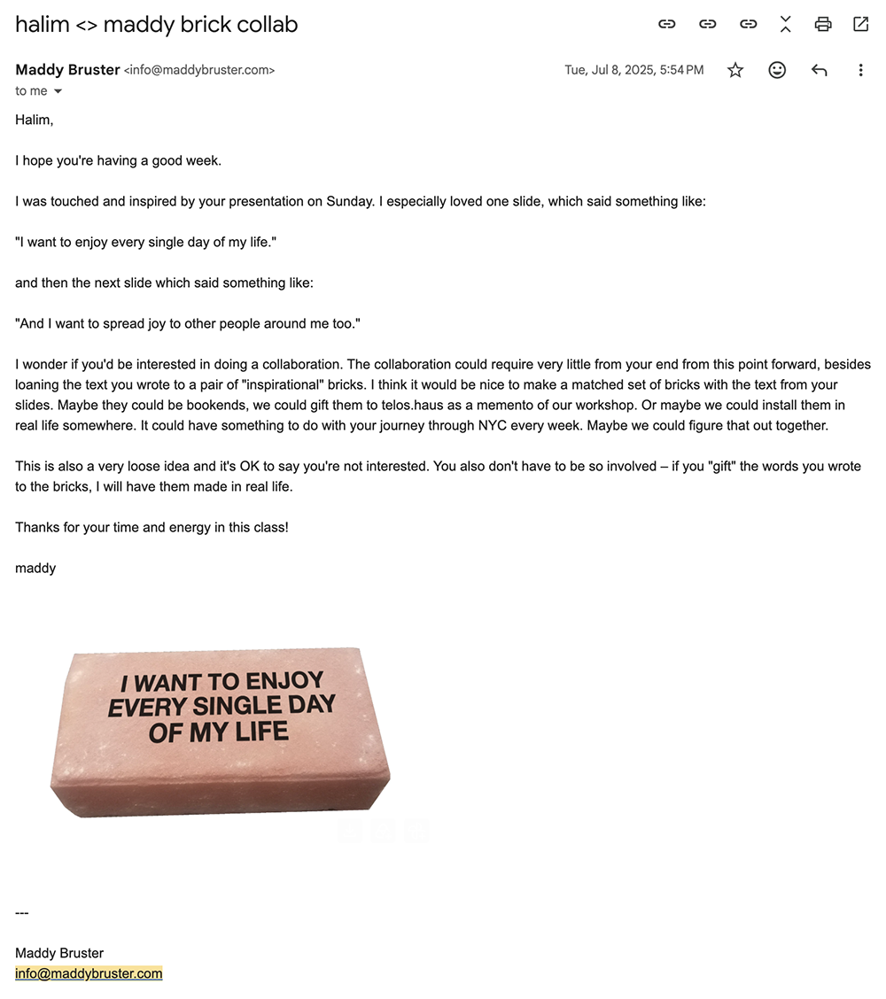
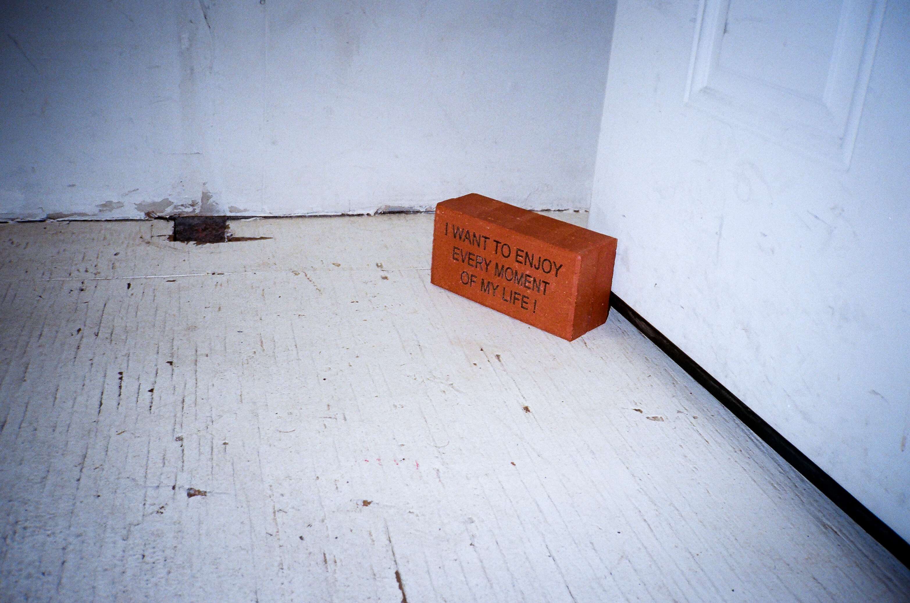
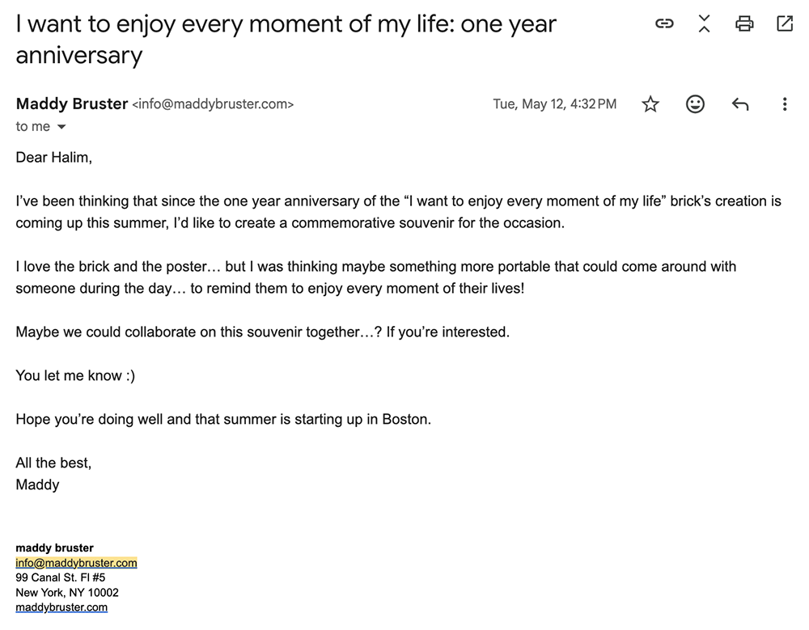

This series of projects turned what could have been an exhausting journey (over ten hours round-trip, twice a week) into something meaningful and rewarding. It made me pay closer attention to cities I might have otherwise overlooked and allowed me to capture beautiful moments along the way.

For me, solar energy is active energy. It's energy I can only gain by actively moving.
If I stop moving forward, I lose the power of the sun—the brightest source of light in the universe.
Instead of thinking, “Why is this happening to me?” or “Commuting is exhausting. Wouldn’t it be better to just stay home?”, I want to enjoy every moment of my life and share that joy with others.

**
This solar panel project has also grown beyond its first experiment, Sunlight TV, gradually branching out through different mediums and collaborations. Here you can explore how the project has expanded so far, and this page will continue to be updated with new projects.


**
Another Day of Sun
I made a small zine from my solar panel story. The title was named after Another Day of Sun, the song I used for the Sunlight TV music video.
Inside the zine cover, there is a card-sized magnifying glass that serves as a distributable version of my solar panel.


When readers take the cover out and focus sunlight through the magnifying glass, it immediately burns a hole through the middle of the sun graphic because the black square at the center absorbs heat faster than the surrounding white area.

When it is held up to a window, the hole lets sunlight shine onto the photograph, creating the image of the sun shining over the workshop participants.

To represent the value of resilience, I placed it on the kitchen window where the intruder had entered.

**
(Do–Re–Mi–Fa) Sol–Ra.dio
For the workshop’s final BBQ party, I wanted to create something that both the workshop participants and the guests could use to share joyful memories together.

Throughout the party, participants could upload photos to the TWA Memories Are.na channel. Those photos would then appear on Sol–Ra.dio, where they could be printed along with a short message.


People could also submit their favorite songs through the radio. Each song would then be added to the lounge playlist so everyone could enjoy the music together.

**
Little Wrens
July 8, 2025. Maddy Bruster, whom I became friends with at the workshop, emailed me to suggest a collaboration. I was so excited!
She had been working on a project about bricks and wanted to engrave the line from my presentation, “I want to enjoy every moment of my life and share this joy with others!” onto a brick.

Maddy designed a poster with two bricks floating in the air, and I finished it by adding the line from her presentation, "The two little wrens, worthless and unlovely, are free." The two wrens refer to the two bricks and the two of us.
We went to Secret Riso Club together to print the poster, and during the BBQ party, we installed it on the window of telos.haus.

Maddy also made the brick itself. It turned out beautifully.

**
May 12, 2026. A year later, Maddy emailed me again with the idea of creating a commemorative object to celebrate the first anniversary of the engraved brick. I was happy to join her for this second collaboration. The project is currently in progress, and I'm excited to see what comes out of it.

**
Are.na Camera
The mini camera I used for Sunlight TV relied on an SD card to transfer photos to my Are.na channel. To make the uploading process simpler, I decided to build my own Are.na Camera.
I wanted to use Are.na as my digital darkroom. Photos taken with the Are.na Camera are automatically uploaded to my Are.na Darkroom whenever the camera connects to Wi-Fi.
This project is still in progress, and updates on its development are posted periodically on the Are.na Camera channel.

To be continued ...